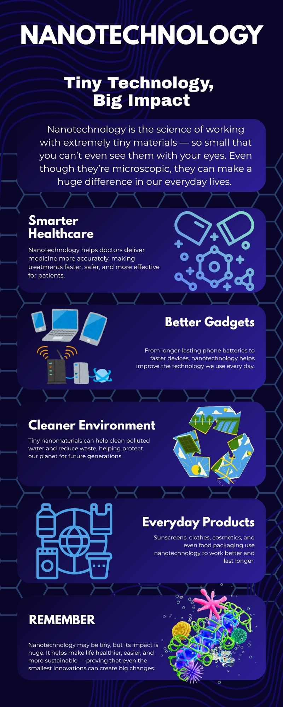
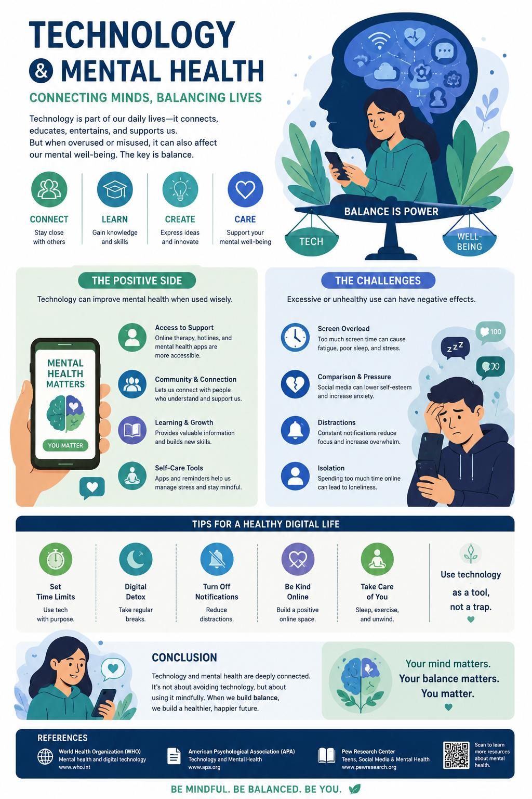
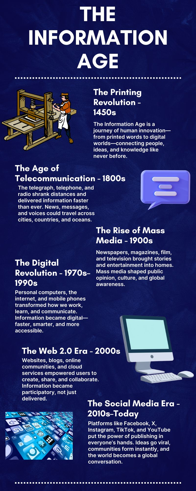
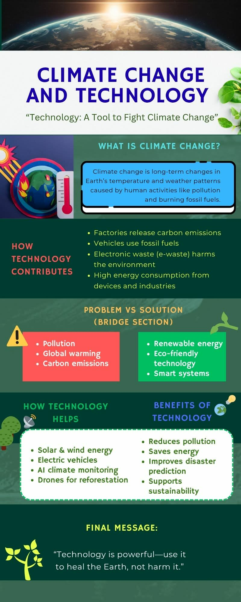
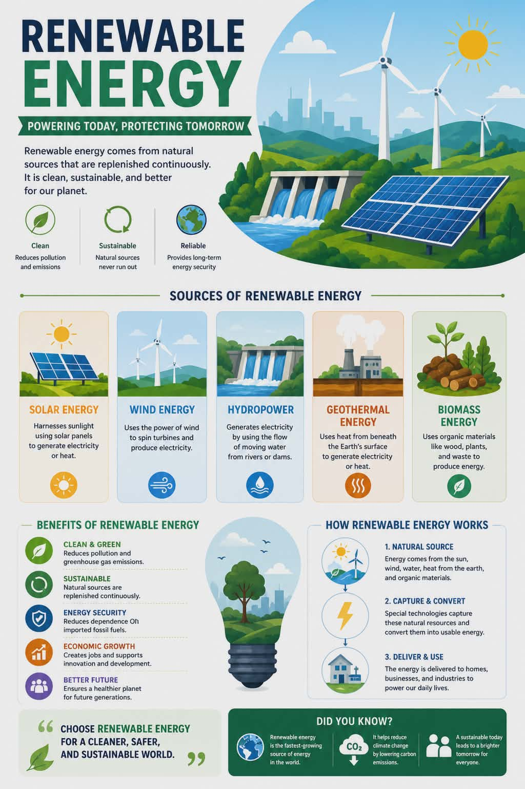
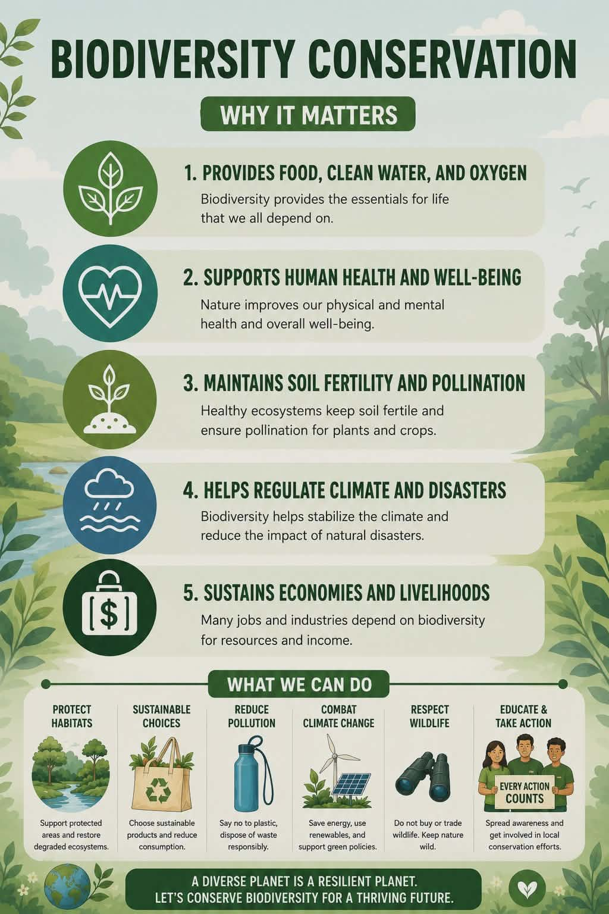
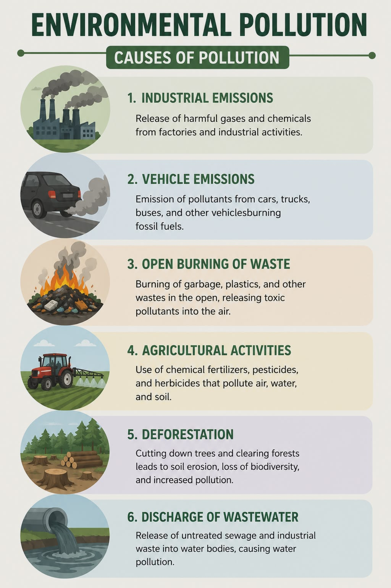

INDIVIDUAL WORK
Individual Infographics








A collaborative exploration of how science and technology shape — and are shaped by — the society we live in.
This project investigates the dynamic relationship between scientific advancement, technological innovation, and the societies they emerge from. Through nine individual infographics, we explore how STS frameworks help us critically understand modern technological realities — from AI ethics and digital inequality to climate science and biotechnology.







In an age where AI reshapes labor markets, gene editing redefines human identity,
and social media rewires democracy, the Science, Technology, and Society framework is not optional —
it is essential.
STS teaches us to ask: who benefits, who is harmed, and who decides? These are not
merely academic questions — they are the questions that will define our generation's relationship
with the technologies we inherit and create.
As future professionals and citizens, we are not passive recipients of technological change.
We are its architects. STS equips us to build a future that is not only
technologically advanced, but also just, inclusive, and human-centered.
This course has challenged us to see beyond innovation's shine — to examine the
social fabric that technology both reflects and reshapes.